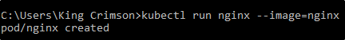

Demo PODs
In questa demo, mostriamo come creare e gestire i PODs.
Possiamo usare kubectl run per creare un POD:
Il nome possiamo sceglierno noi (il primo nginx),
mentre il secondo deve essere ESATTAMENTE
il nome dell'immagine sull'hub da scaricare.
In alternativa, puoi specificare l'immagine da altre fonti.

Possiamo ottenere lo stato dei PODs con "kubectl get pods"

Possiamo ottenere informazioni su un pod "kubectl describe pod"
Qui verranno mostrate informazioni vitali, ma anche altre come:- I container usati nel POD
- Serie di eventi successi nel POD (creazioni di container, run, stop, etc.)

Altra serie di informazioni: tramite "get pods" ma con "-o wide"